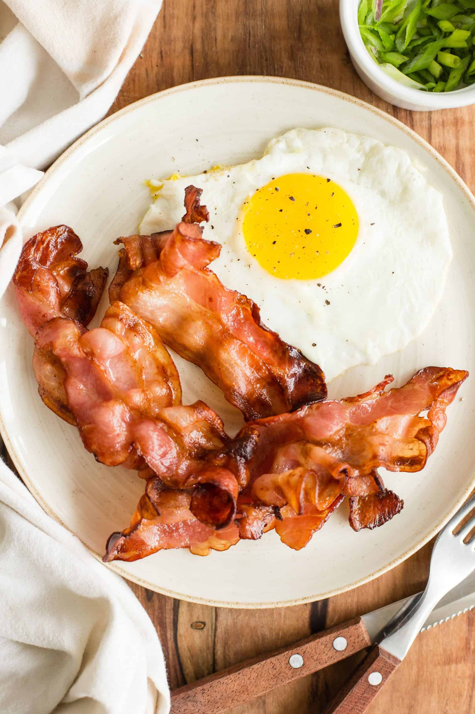

Fried eggs with bacon

Description
In my opinion, the best breakfast consists of two perfectly fried eggs, crispy bacon, and toast made with hearty bread. This bacon and eggs recipe delivers.
Bacon and eggs or eggs and bacon? No matter, it is definitely the breakfast you want
on those lazy mornings when you have time to relax around the kitchen table, drinking a cup of coffee or two.
Ingredients
- 4-6 slices of bacon
- 3 fresh eggs
- Butter
- Salt and pepper to taste
- 2 slices of toast
Steps
- Put the bacon strips in a large frying pan on medium-high. As bacon begins to cook, reduce heat to
medium so the bacon doesn't spatter or burn.
Cook slowly until it is done on one side; then turn and cook slowly on second side, to desired crispness.
- Remove pan from heat and transfer bacon to a paper towel-lined plate and cover to keep it warm.
Allow frying pan to cool for a few minutes before cooking eggs.
-
Break each egg into a small cup or bowl and then slip egg into
the warm bacon grease in pan. Place pan back over low heat and cook eggs slowly.
- When the eggs are cooked on the bottom, tip the pan and baste them with a
little hot bacon grease to cook the tops. Cut the eggs apart with a spatula and lift onto a plate.
- Serve with buttered toast. Add jam, preserves, honey, apple butter, or a mixture of cinnamon and sugar.